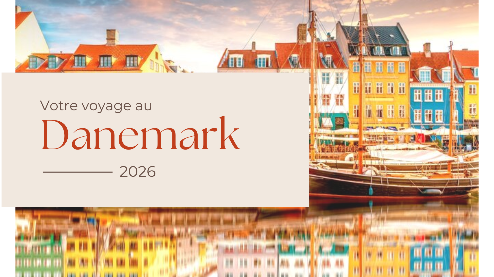
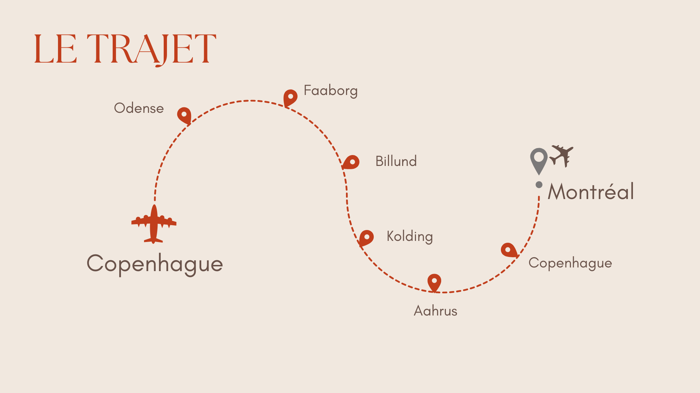

Création d'un itinéraire de voyage
Dans le cadre de ma formation, j’ai conçu un forfait de voyage personnalisé pour un couple souhaitant découvrir le Danemark. L’objectif de ce projet était de proposer un itinéraire cohérent, équilibré et adapté à des voyageurs curieux, sensibles à la culture locale, à la nature et aux expériences authentiques. Le circuit a été pensé sur plusieurs jours, avec un déplacement en voiture afin d’offrir une plus grande liberté et flexibilité. Les contraintes incluaient un budget raisonnable, une diversité d’activités (culturelles, naturelles et ludiques), ainsi qu’une organisation fluide entre les différentes étapes du voyage.
Aspect technique de la création d'un itinéraire
Pour réaliser ce projet, j’ai effectué des recherches approfondies à partir de sources fiables afin de sélectionner les destinations, activités, hébergements et restaurants les plus pertinents. J’ai utilisé une approche centrée sur le client, en adaptant chaque choix à leurs attentes (authenticité, immersion, durabilité). J’ai également travaillé sur la cohérence géographique du parcours afin d’optimiser les déplacements. L’un des principaux défis a été de trouver un équilibre entre la richesse des activités proposées et le rythme du voyage, sans surcharger l’itinéraire. De plus, la sélection d’expériences réellement authentiques, tout en restant accessibles et réalistes, a été un enjeu.


Parcours proposé
Le circuit débute à Copenhague, où les voyageurs découvrent la capitale à travers des activités immersives comme la visite à vélo et les canaux. Ils poursuivent ensuite vers l’île de Fionie avec des étapes à Faaborg et Odense, mettant en avant la nature, le patrimoine et des expériences uniques comme le Saunagus. Le parcours continue vers Kolding et Billund, avec une alternance entre détente, découverte botanique et activités ludiques comme LEGOLAND. Enfin, le voyage se termine à Aarhus, où les voyageurs explorent la culture locale, la nature et la scène gastronomique. L’ensemble du circuit propose une progression logique, variée et enrichissante.
Compétences développé
- Recherche et analyse : J’ai appris à sélectionner des informations fiables et pertinentes afin de construire un projet crédible et réaliste
- Planification et organisation : J’ai développé ma capacité à structurer un itinéraire fluide en tenant compte des distances, du temps et du rythme des voyageurs.
- Compréhension des besoins clients : J’ai adapté mes choix en fonction d’un profil précis, ce qui m’a permis de proposer une expérience personnalisée.
- Gestion des contraintes : J’ai appris à faire des compromis entre budget, temps et qualité des expériences proposées.